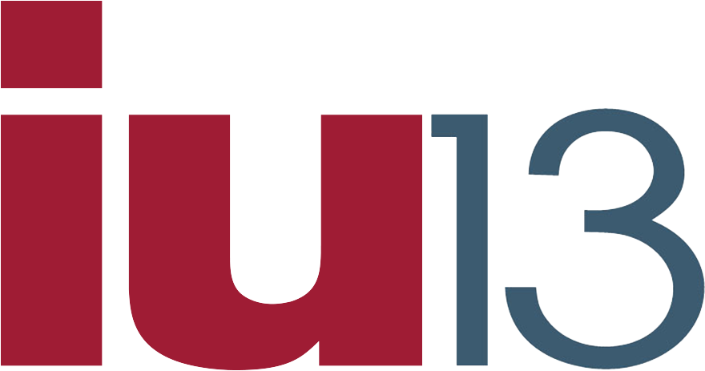

A large, mature IU serving Lancaster and Lebanon counties with a "Work Worth Doing" vision centered on belonging and trust. STEELS-aligned STEM is a named strength; this plan cycle's primary focus is organizational resilience and leadership development.
Provide services, supports, and solutions that make a meaningful difference for all learners and the broader community across Lancaster and Lebanon counties.
Cultivating trust, unity, and belonging across education systems and communities to ensure every learner is well served. STEM education aligned to STEELS standards is an explicit organizational strength.
Fosters agile approaches to identifying and solving complex problems facing education and communities; supports continuous improvement across all IU13 programs. Sustained by the Project Management Office (PMO).
Active early childhood programs showing significant student growth on Teaching Strategies Gold Assessment. Multi-site presence across Lancaster and Lebanon counties.
High-intensity behavioral health and academic programs serving students with complex needs; noted for high successful completion rates. Strong mental health professional infrastructure.
Explicitly cited as a strength in the plan: "STEM education aligned to STEELS standards." No specific named programs or personnel — partnership or resource-sharing with more developed STEM IUs warranted.
Direct community partner on Steering Committee (Anna Ramos). Post-graduation success explicitly named as a goal; collaboration with WDB supports career pathway alignment.
Elizabethtown College (Stephanie Zegers), Lebanon Valley College (Kathy Blouch), Millersville University (Lara Willox), Lebanon Valley Chamber, Lancaster Chamber — all on Steering Committee.
Three PaTTAN representatives on Steering Committee (Angela Kirby, Chris Cherny, Sergio Anaya), indicating active state-technical assistance alignment.
Belonging and CR-SE are dominant plan themes with dedicated staffing. STEELS mention is brief and not tied to specific programs or personnel — could grow with more developed STEM IU partnerships.
Leverage IU13's scale and relationships to bring diverse partners together, expand networks with representative community voices, and support Board in building trust and unity locally.
Continuously refine academic and social-emotional programming; maximize learner success beyond graduation through expanded post-secondary support systems.
Maintain systems that incentivize innovation; foster agile approaches; cultivate staff belonging and unity; create flexible, caring work environment.
Engage leaders through structured systems; build staff decision-making capacity; identify and develop future leaders; create ongoing leadership development opportunities.
Profile based on IU13 Comprehensive Plan 2024–2027 (iu13-pc.pdf), extracted 2026-05-10. Technologies: Teaching Strategies Gold, Microsoft Planner/Tasks. STEELS-aligned STEM is listed as a strength without named programs or personnel — this is a high-potential but underspecified signal. Recommend direct outreach to verify active STEM programming scope. No AI, CS, or makerspace initiatives in this plan.